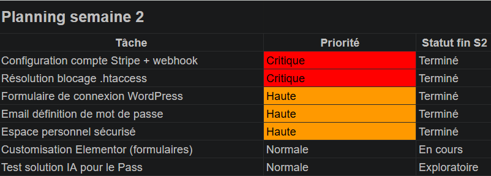
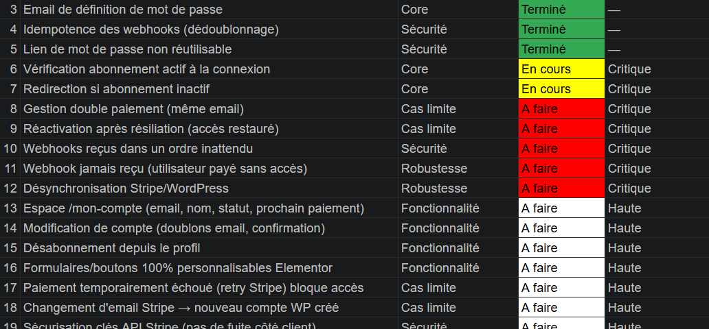

Planification, suivi hebdomadaire, audits et priorisation des livrables du Pass Wouafer's sur 9 semaines.
Les traces documentent la gestion de projet en autonomie progressive.
Trace n°1
Découpage des tâches — Semaine 2
Savoir-faire élémentaires de cette trace
Planifier les activités du projet
Identifier les acteurs et leurs rôles
Communiquer avec les parties prenantes

Figure 1 — Planification initiale après prise en main du cahier des charges (semaine 2).
Descriptif de la trace
Après la découverte (S1), j'ai structuré le travail de la semaine 2 en tâches prioritaires alignées
sur le livrable « parcours post-paiement fonctionnel ». Cette trace montre le
découpage que j'ai proposé à Sophie avant de coder l'intégration Stripe.
Savoir-faire mobilisés & lien avec la trace
Planifier les activités : les colonnes / lignes
« En cours » / « Bloquant » / « Terminé » sur la capture traduisent
la priorisation webhook → auth → email.
Communiquer : validation du plan avec Sophie (priorités business et techniques).
Trace n°2
Audit & recensement des tâches restantes — Semaine 4
Savoir-faire élémentaires de cette trace
Suivre l'avancement du projet
Évaluer les risques et les opportunités
Tester et valider une application

Figure 2 — Audit autonome à mi-parcours : état des lieux avant la phase profil utilisateur.
Descriptif de la trace
À mi-stage, j'ai réalisé un audit complet du plugin et du parcours
utilisateur pour lister bugs, dettes techniques et fonctionnalités restantes. Document partagé en réunion
d'équipe pour réaligner les priorités des semaines 5 à 7.
Savoir-faire mobilisés & lien avec la trace
Suivre l'avancement : la capture montre le statut par lot fonctionnel.
Évaluer les risques : items comme
« abonnement expiré non bloqué » identifiés avant mise en production.
Trace n°3
Démonstration & recueil des retours — Semaine 8
Savoir-faire élémentaires de cette trace
Présenter les résultats du projet
Ajuster le projet selon les retours
Clôturer le projet
La démonstration
En semaine 8, j'ai présenté à Sophie le parcours complet du Pass Wouafer's en conditions réelles.
La démo couvrait l'enchaînement entier : souscription sur Stripe, réception de l'email de définition
de mot de passe, connexion sur le formulaire personnalisé, vérification de l'abonnement en temps réel,
accès à l'espace membre et aux codes promo, consultation du profil et de l'historique de paiements.
C'était la première fois que l'ensemble du parcours fonctionnait de bout en bout
sans intervention manuelle.
Les retours et la semaine 8
À l'issue de la démo, Sophie a validé le fonctionnel mais a soulevé une question importante :
que se passe-t-il quand je pars ? Le code tel qu'il était à ce stade était difficile à reprendre
pour quelqu'un d'autre. Elle a demandé explicitement que le plugin soit
repris facilement par Clovis, le prochain développeur,
et que l'équipe puisse gérer l'espace membre sans passer par du code.
Ces retours ont défini tout le contenu de la semaine 8 : refactorisation du plugin en modules distincts,
création de l'interface d'administration no-code pour la whitelist des pages,
développement des 13 widgets Elementor et rédaction de la documentation technique.
La démo n'était donc pas une clôture mais un point de pivot
qui a orienté la dernière semaine de travail.
Savoir-faire mobilisés
Présenter les résultats du projet : scénario de démo structuré
pour un interlocuteur non-technique, en suivant le parcours utilisateur de A à Z
plutôt qu'une présentation fonctionnalité par fonctionnalité.
Ajuster le projet selon les retours : traduction immédiate
des remarques de Sophie en tâches concrètes pour S8,
maintenabilité et reprise par un tiers
devenant les nouvelles priorités de la dernière semaine.
Clôturer le projet : livraison d'un plugin documenté,
modulaire et utilisable en no-code par l'équipe, de façon à ce que mon départ
ne crée pas de dépendance sur ma présence.
Bilan — Savoir-faire généraux (suivi de projet)
Compétence 5 — Conduire un projet
Contexte d'utilisation des savoir-faire élémentaires
Planifier (trace 1), suivre et
évaluer les risques (trace 2), ajuster et
clôturer (trace 3). Points hebdomadaires avec l'équipe tout au long du stage.
Contexte d'apprentissage
Gestion de projet : cours BUT + SAÉ. Application en conditions réelles : stage uniquement (premier projet livré en entreprise sur 9 semaines).
Difficulté
Modérée : estimer le temps sur des tâches techniques inconnues (Stripe) était le principal défi.
Avant / après le stage
Avant
Projets scolaires courts, planning imposé par l'enseignant.
Après
Autonomie sur le découpage, audits proactifs, priorisation selon le métier
Déroulement global (référence)
Timeline complète du stage (8 semaines opérationnelles). Chaque semaine est documentée par une trace ou une activité projet.
S1
Découverte & prise en main
Équipe, écosystème, cahier des charges, installation poste.